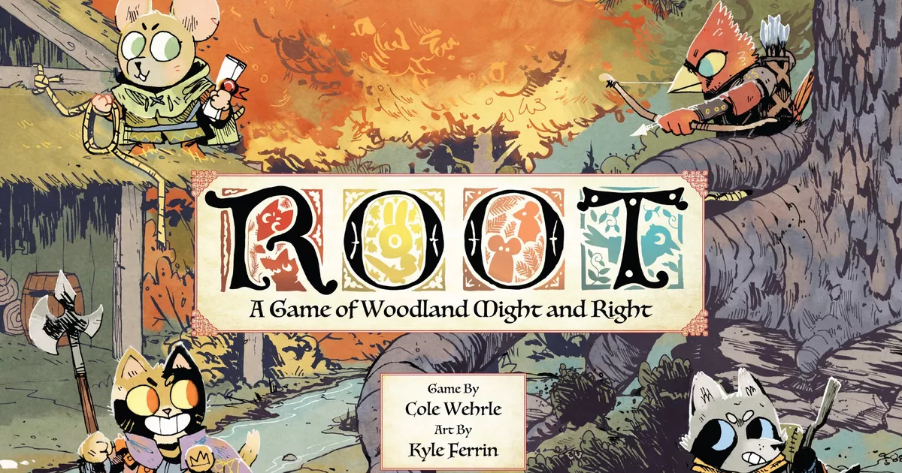

Root (Корни) - одна из лучших игр жанра контроль територий, изданная компанией LederGames в 2016, и получившая больше 10 дополненией! На данный момент, Корни находятся на 29 месте в рейтинге BGG! Главная фишка "Корней", это большое количество фракций, и ихассиметричность. Каждая фракция абсолютно уникальна, и имеет механики, которых нет у других, и поэтому, игровой процес за каждую из фракций каржинально отличается друг от друга, как будто играешь в абсолуютно разные игры! События игры происходят в лесу, где когда-то правила фракция птитц "Крылатая Династия", строгая фракция, где все идет строго по уставу, а при малейших отклонениях, происходит смута. Фракция котов "Маркиза Дэ Катэ" воспользовалась моментом, и свергла власть птиц, и стала править лесом. И теперь, между котами и птитцами началась настоящая, жесточайшая война. В это время, остальные жители леса: зайцы, лисы и мыши, были не довольны властью ни тех ни других, и реши устроить революцию, основав "Лесной Союз". А "Бродяга", которому было все равно на власть, просто пытается снисыскать славу в такое время.
